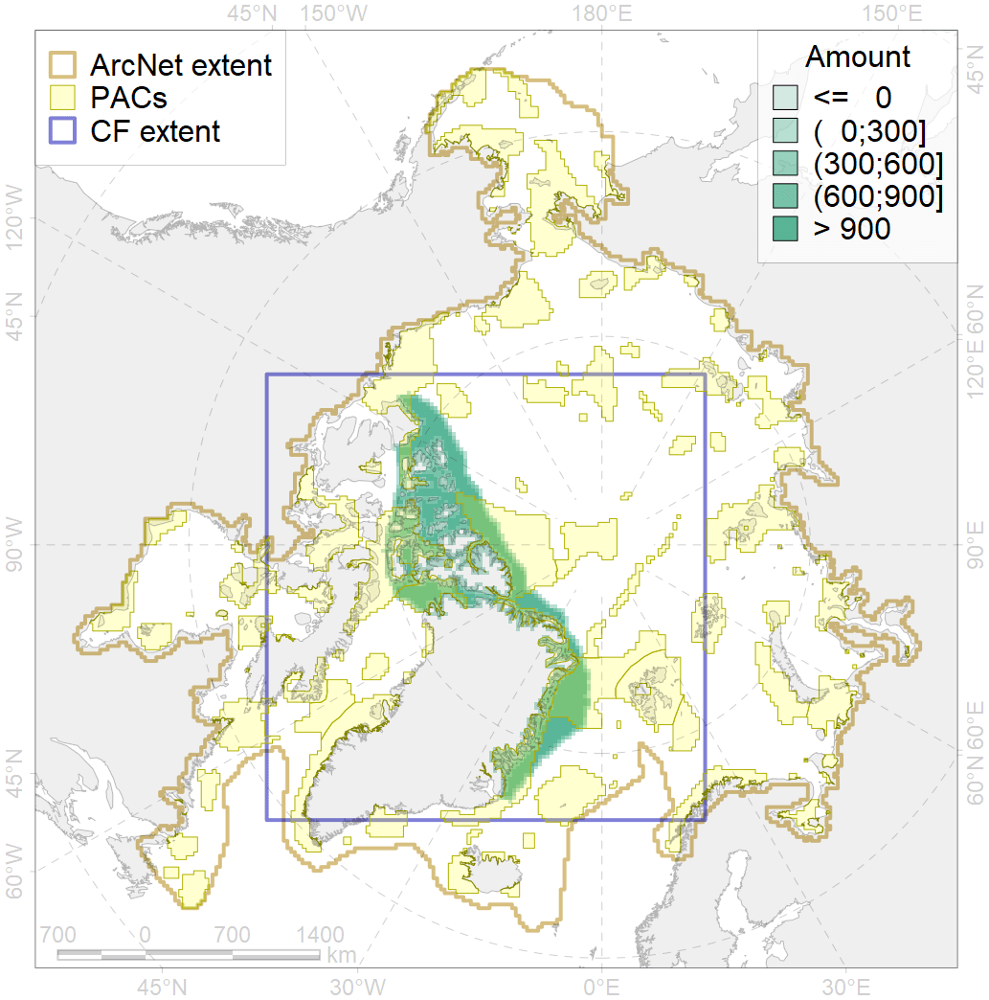
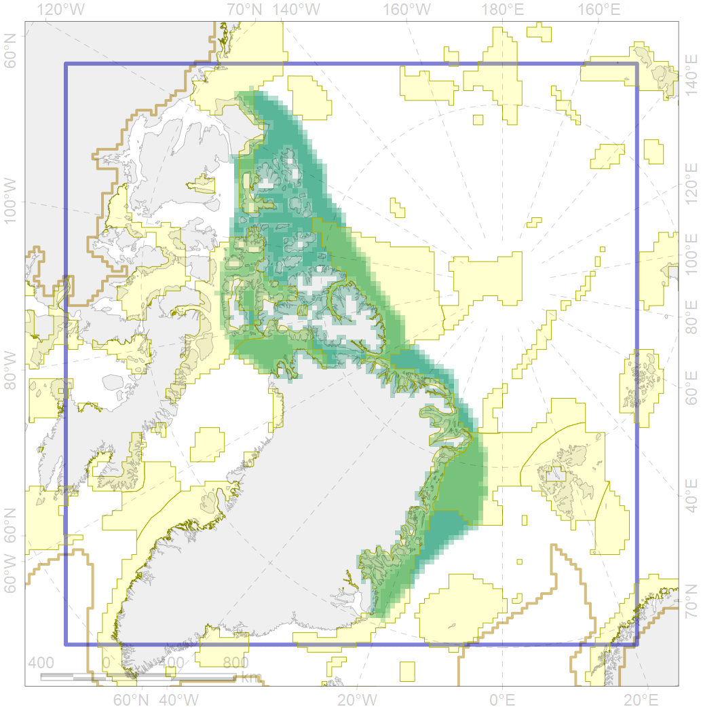

7014

| CF ID | 7014 |
| CF Name | Core of Canadian - Greenland Province of Arcto-Atlantic zoogeographical region |
| Time Period | 1900-1980 |
| Source(s) | Lubinsky, 1980 |
| Seasonality | January - December |
| Depth Horizon | Sea floor and water column above |
| Methodology | Boundaries were driven on the basis of literature |
| Author Name | V. Spiridonov |
| Notes | |
| Conservation Target Set in the Scenario | 0.07385184 |
| Conservation Target Achieved in the Scenario | 0.532 (Scenario: 720.1%) |
| PAC ID | Proportion in the PAC | Contribution to ArcNet Target Achievement | PAC’s Contribution to the Achieved Target |
|---|---|---|---|
| 29 | 10.4% | 138.8% | 19.3% |
| 32 | 9.3% | 122.4% | 17.0% |
| 33 | 3.6% | 48.2% | 6.7% |
| 51 | 7.3% | 94.0% | 13.1% |
| 52 | 7.3% | 92.9% | 12.9% |
| 53 | 0.1% | 0.9% | 0.1% |
| 54 | 12.6% | 169.5% | 23.5% |
| 62 | 0.9% | 9.6% | 1.3% |
| 63 | 2.0% | 19.1% | 2.7% |
| inner | 53.2% | 695.5% | 96.6% |
| outer | 46.8% | 24.6% | 3.4% |